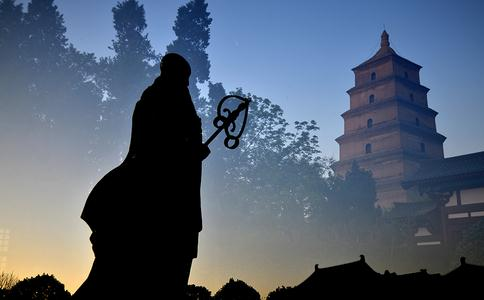

吴承恩的小说《
在《西游记》中，唐僧的出生有着传奇的经历：唐僧的父母在船上被奸人所害，唐僧出生后也差点遭灭口，母亲只好偷偷把他放入木盆顺江漂走，听天由命。结果小唐僧在漂过金山寺时被法明和尚所救，取乳名叫江流，成人后取法号叫玄奘，从此与
南京大学哲学系教授
那么，玄奘出生时是否有着什么异常迹象呢？九华山玄奘寺主持传真法理告诉记者，在《大慈恩寺
玄奘大师是佛学奇才，那么他是如何出家的呢？《西游记》中记载，玄奘是如来座下金蝉长老
杨维中教授说，关于玄奘出家的原因，现存文献语焉不详。在《大唐故三藏玄奘法师行状》和《大慈恩寺三藏法师传》中，都将玄奘出家的动机解释为对
那么，玄奘少年时期生活困顿是否有依据呢？杨教授说，玄奘的家境开始还是不错的，祖父和父亲都是博学多才的知识分子，其父陈惠曾是县官，母亲是隋洛州长史宋钦之女，玄奘法师是第四子，母亲在玄奘很小时就去世了，《古今译经图纪》说玄奘“鸠车之龄落彩”，也就是五岁丧母的意思。而玄奘的父亲在玄奘八岁前就辞官归故了。母亲去世，父亲年迈多病（上文说过玄奘是父母晚年得子），造成了玄奘幼年困顿的局面。
那信仰之说依据何在？在玄奘年少的时候，父亲教他的都是儒家、道家典义。也就是说，玄奘出家之前似乎还没有接触到
玄奘西去取经的真正目的是什么？在小说以及后来的影视作品中是这么说的：
杨维中教授说，在中国历史上，西
在后人小说演绎中，唐僧是由唐太宗亲自任命去西天取经的。临行前，唐太宗亲自将通关文牒交给唐僧，还与玄奘结拜，对他非常支持。然而，专家给出的历史真相却出人意料，玄奘西行的主要障碍竟然是来自朝廷。
杨教授说，玄奘的出行没有得到朝廷的许可，是偷偷出关的。初唐时期，国家初定，边界不稳，不允许国人出境，玄奘几次三番申请“过所”（即通行证，小说中的通关文牒）都未获准。贞观三年（公元629年），长安遭遇大灾，政府允许百姓“随丰就食”，于是玄奘混入灾民中，到达凉州（今甘肃武威）。根据当时规定，私度边关比私度内地关隘惩罚更重。但玄奘依然不为所动，即使后来多次被抓，最终都能顺利过关。真实的玄奘显示了其坚定的勇气和过人的胆识，完全和小说中胆小怕事的唐僧不同。杨教授说，小说中其实将玄奘丑化了。
没有本事高强的徒弟，金钵、金红 玄奘西行过程中都带了什么上路？神话中说他不仅在路上收服了四大
杨教授说，玄奘一路西行得到很多人帮助，但不是徒弟，如果说一定要找一个徒弟的话，有一个叫石盘陀的人是请玄奘为他
至于玄奘路上还带了些什么，杨教授说史料也无记载。观音三宝肯定没有的，金钵也不可能，钵应该有，但不可能是金的，应该是木制或陶制的。记者注意到，在后来演绎的《西游记》影视作品中，玄奘的袈裟和僧袍都是红色、黄色甚至白色。那么玄奘当时的袈裟究竟是什么样的呢？杨教授说，袈裟的颜色到宋朝时期才变得丰富起来，唐朝时期的袈裟是以黑色基调为主的，如青色、灰色等。玄奘西行时应该带有两种僧服，一种是便装，一种是正式的袈裟。
玄奘确实相貌堂堂但并未到过女儿国在《西游记》中，唐僧英俊的外貌惹得各色美女、妖女垂爱，特别是到了女儿国，女国王更是对他百般勾引。那现实中是否真的存在女儿国这样的地方呢？现实的玄奘是否相貌英俊呢？
杨教授说，文学作品中大部分国度都是虚构出来的，比如女儿国等国家，现实中不存在，都是作者根据玄奘写的《在唐西域记》一书中玄奘路途中的见闻而虚构出来的。南师大文学院教授黄征则告诉记者，火焰山这个地名确实是有的，在今天的吐鲁番附近，但玄奘实际路线并没有经过那个地方，而是在离火焰山较远的一个地方驻扎。火焰山并不如小说中描述的在喷火，只是因为山上的土壤是红色的。
关于玄奘的相貌，杨教授说没有记载，但对他父亲的外貌有描述，《大慈恩寺三藏法师传》中说：“其父陈惠，英洁，有雅操，早通经术，长八尺，美眉明目，裒衣博带，好儒者之容，时人方之郭有道。”父亲应该相貌堂堂。灵谷寺净然法师则告诉记者，玄奘出生后，大家都觉得他“
在《西游记》里，唐僧不仅经历了很多很奇妙的国家，还经历了九九八十一难，那现实中的玄奘是否也经历了这些苦难呢？
杨教授说，玄奘遇到妖魔鬼怪这些肯定不存在，但《西游记》中最后一难，就是“渡河失经”这一难，这在历史上倒是有的，玄奘回国时就碰到这个情况。据记载，在回国途中，玄奘从僧诃补罗国启程，到了呾叉尸罗国。在渡印度河时，突然狂风大起，巨浪滔天，船只几乎要覆没。等风停浪歇，发现丢失了五十夹经本以及花种等。国王迦毕试听说此事后，将玄奘接往乌铎迦汉荼城。这时玄奘又派人到乌仗那国补抄渡河失落的迦叶臂耶部三藏。经文补抄齐全后，玄奘才随迦毕试国王继续向西北进发。
玄奘西天取经拜见到了谁？ 在《西游记》中，唐僧要到达的目的地是西方
杨维中教授说，真实的玄奘西行目的地，没有雷音寺，更没有如来。真实的如来即释迦牟尼诞生于公元前6世纪，并于80岁
在玄奘时期，令众佛教徒无限神往的
而玄奘到那烂陀寺时，正是德高望重的戒贤大师住持此寺。这时，戒贤已百余岁，据说是留寿等候玄奘的，对玄奘异常器重。
西行途中他是怎么克服语言障碍的？我们知道，玄奘是个伟大的佛学翻译家，他对印度梵文是非常精通的，但同时有一个问题可能令众人困惑，那就是：玄奘取经所到的国家语言都是一样的吗？玄奘在这些国家怎么跟人交流呢？在神话小说中，语言问题根本没有涉及，所有妖魔鬼怪、各路神仙都说一种语言，而现实中是不可能的。那么，这么多国家的语言玄奘都懂吗？他是从哪里学来的呢？
杨维中教授说，在西行路途中经过的国家，如果语言不通可以找到侨民和商人沟通。而他的梵文，在国内一些名师那里可以学习，也有可能在国内拜外国僧人学习。但杨教授告诉记者，玄奘对语言的学习和佛教学习，是在印度系统完成的。
原来，在玄奘到达西天后，除了求取那里的
南京师范大学文学院黄征教授也告诉记者，初唐时期，各族混杂，在中国西部地区已经居住了大量从西域来的胡人，语言自然也五花八门，而玄奘西行前应该会做准备。而且，在玄奘西行的那么多国家中，很多当时也在中国管辖之内，如高昌国、龟兹、阿耆尼国等，都在新疆境内。
玄奘回国都是谁护送？玄奘西去历经艰难险阻，那回来的途中是否也同样波澜壮阔呢？小说中对唐僧的归来简单带过，直接由如来座下的金刚搭乘祥云护送回国。回到大唐后，师徒四人受到热烈迎接，盛况空前。现实是怎样的呢？
杨维中教授说，玄奘归国的路途平坦无阻，而且有人护送，但不是神仙，而是由几个国家国王以接力形式护送回国。贞观十九年（645年）正月七日，玄奘进至漕上，百姓闻声奔集，围观若堵，从者如云。迎接他的排场不比电视上小。
除了大师最终带回了许多经书，除了经书，他还带回了什么？在《西游记》中，唐僧为换经书，还把御赐的紫金钵当作“人事”送给了佛祖。
送金钵那是吴承恩讽刺
《西游记》的结局，说唐僧师徒将经书送回大唐后，又由金刚带回到西天，如来给几个人分别授了职位，那真实的情况如何呢？玄奘回国后被封为什么？之后的生活又如何呢？
杨教授说，大师是个淡薄名利的人，回国后，唐太宗曾让他
对玄奘生平所写的着作，知道的人大多以为只有《大唐西域记》，但杨维中教授说，玄奘还有几本着作不太为人所知，这些书都是在印度所写，并且如今都已失传，书名分别是《会宗论》、《制恶见论》和《三身论》。
麟德元年（664年），一代佛学大师圆寂。圆寂后，大师遗骨前往何处了呢？留下谜团。